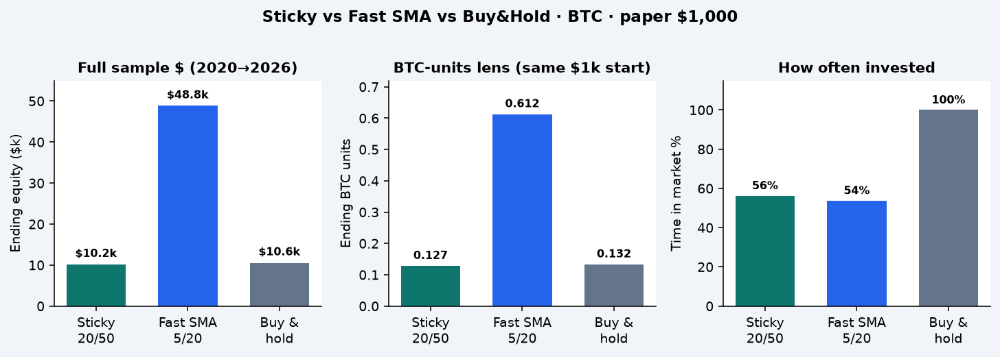
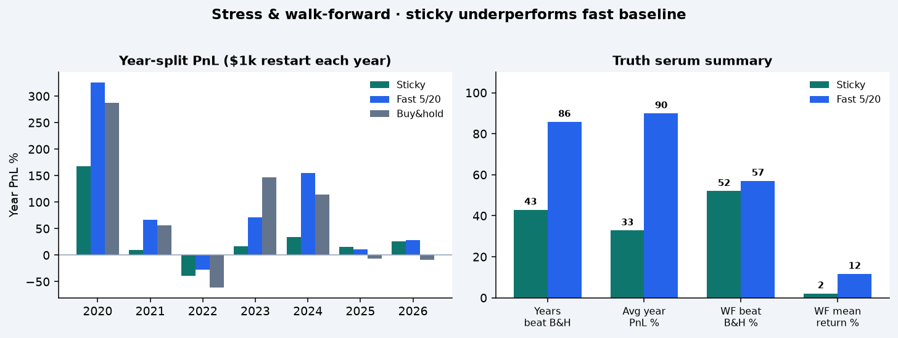

After PR #4 we compared the new sma_sticky defaults (20/50, confirm 2, exit gap 1%) to the fast SMA 5/20 baseline and plain buy&hold on BTC. Sticky was meant to stay invested and grow units. On this sample it roughly matches hold on dollars, stays out ~44% of the time, and loses badly to fast SMA on both $ and BTC-units. Grid the knobs before killing the idea — don’t ship these defaults.

One continuous run: 2020-01-01 → 2026-09-05 · start $1,000.
| Strategy | End $ | Max DD | Trades | In mkt | BTC units |
|---|---|---|---|---|---|
| Sticky 20/50 | $10,169 | −52% | 24 | 56% | 0.127 |
| Fast 5/20 | $48,827 | −40% | 70 | 54% | 0.612 |
| Buy & hold | $10,558 | −76% | 1 | 100% | 0.132 |
Each row restarts with $1,000 on Jan 1 (2026 = YTD).
| Year | Sticky end | PnL | Max DD | Hold end | vs hold |
|---|---|---|---|---|---|
| 2020 | $2,678 | +168% | −17% | $3,868 | LOST |
| 2021 | $1,092 | +9% | −22% | $1,563 | LOST |
| 2022 | $607 | −39% | −47% | $388 | BEAT |
| 2023 | $1,165 | +17% | −26% | $2,469 | LOST |
| 2024 | $1,343 | +34% | −37% | $2,143 | LOST |
| 2025 | $1,153 | +15% | −14% | $937 | BEAT |
| 2026* | $1,255 | +26% | −14% | $914 | BEAT |
Sticky: 3/7 beat hold · avg PnL +32.8% · worst DD −46.7%. Fast refresh still 6/7 · avg +89.9% · worst DD −32.5%.

Train 365 → test 90 → step 90 · 23 folds · $1,000 each.
Sticky WF is a coin-flip vs hold and clearly behind the fast baseline. Softest story for a “stickier core” rule.
configs/grids/sma_sticky.yaml.Grid-search sticky params; optionally try fast entry / sticky exit or shorter windows with a gap. Keep fast 5/20 as the champion to beat until a sticky config clearly wins BTC-units and softens dips.
experiments/runs/stress_20260906T163824Z — sticky year-splitexperiments/runs/stress_20260906T163829Z — fast year-split refreshexperiments/runs/walkforward_20260906T163830Z — sticky WFexperiments/runs/walkforward_20260906T163837Z — fast WF refreshexperiments/runs/20260906T163836Z/ — full-sample sticky / fast / B&Hbriefs/2026-09-06-sma-sticky-vs-fast.md · diagrams · experiments/results.tsv